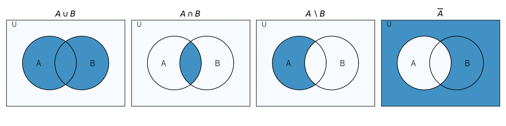

第 2 章 集合と論理
確率論では「事象」を集合として扱い、「事象 \(A\) または事象 \(B\) が起こる」を和集合 \(A \cup B\) で表す。また、数学の主張を正確に述べ、それを証明するには論理の言葉が欠かせない。本章では、以降のすべての章の土台となる集合と論理の基本を学ぶ。
集合
集合の定義と表記
範囲がはっきりと定まったものの集まりを集合という。集合を構成する個々のものを要素または元といい、\(a\) が集合 \(A\) の要素であることを \(a \in A\)、要素でないことを \(a \notin A\) と書く。
集合の表し方には、要素を並べる外延的記法と、要素の満たす条件を書く内包的記法がある。
要素を 1 つも持たない集合を空集合といい、\(\emptyset\) で表す。有限集合 \(A\) の要素の個数を \(|A|\) と書く。
集合 \(A\) のすべての要素が集合 \(B\) の要素でもあるとき、\(A\) は \(B\) の部分集合であるといい、\(A \subseteq B\) と書く。\(A \subseteq B\) かつ \(B \subseteq A\) のとき \(A = B\) である。2 つの集合が等しいことを示すには、この 2 つの包含関係を示せばよい。
集合演算
議論の対象となるすべての要素を含む集合を全体集合といい、\(U\) で表す。全体集合の部分集合 \(A, B\) に対して、次の演算を定める。
名称 |
記号 |
定義 |
|---|---|---|
和集合 |
\(A \cup B\) |
\(\{x \mid x \in A \text{ または } x \in B\}\) |
共通部分 |
\(A \cap B\) |
\(\{x \mid x \in A \text{ かつ } x \in B\}\) |
差集合 |
\(A \setminus B\) |
\(\{x \mid x \in A \text{ かつ } x \notin B\}\) |
補集合 |
\(\overline{A}\) |
\(\{x \in U \mid x \notin A\}\) |
対称差 |
\(A \mathbin{\triangle} B\) |
\((A \setminus B) \cup (B \setminus A)\) |
これらの演算を図示したものをベン図という（図 2）。


図 2 ベン図による集合演算の表現（色を付けた部分が演算結果）
\(A \cap B = \emptyset\) のとき、\(A\) と \(B\) は互いに素であるという。互いに素な集合の和集合の要素数は、それぞれの要素数の和 \(|A \cup B| = |A| + |B|\) になる。この事実は第 4 章の「和の法則」の基礎になる。
集合演算については、次の法則が成り立つ。
法則 |
内容 |
|---|---|
交換法則 |
\(A \cup B = B \cup A\)、\(A \cap B = B \cap A\) |
結合法則 |
\((A \cup B) \cup C = A \cup (B \cup C)\)、\((A \cap B) \cap C = A \cap (B \cap C)\) |
分配法則 |
\(A \cap (B \cup C) = (A \cap B) \cup (A \cap C)\)、\(A \cup (B \cap C) = (A \cup B) \cap (A \cup C)\) |
ド・モルガンの法則 |
\(\overline{A \cup B} = \overline{A} \cap \overline{B}\)、\(\overline{A \cap B} = \overline{A} \cup \overline{B}\) |
ド・モルガンの法則は、確率の計算で「少なくとも 1 つ起こる」事象の補集合が「どれも起こらない」事象になることを使う際に重要である（第 6 章の誕生日問題を参照）。
直積とべき集合
集合 \(A, B\) の要素の順序対全体の集合を直積といい、\(A \times B = \{(a, b) \mid a \in A, b \in B\}\) と書く。\(|A \times B| = |A| \cdot |B|\) である。たとえば、2 個のサイコロの目の組全体は \(\{1, \ldots, 6\} \times \{1, \ldots, 6\}\) であり、要素数は 36 である。同じ集合の \(n\) 個の直積を \(A^n\) と書く。
集合 \(A\) の部分集合全体の集合をべき集合といい、\(2^A\) または \(\mathcal{P}(A)\) で表す。\(|A| = n\) のとき、各要素について「含める」「含めない」の 2 通りを選ぶので \(|2^A| = 2^n\) である。
命題論理
命題と論理演算
真か偽かが明確に定まる文を命題という。「6 は偶数である」は真の命題、「7 は偶数である」は偽の命題である。一方、「6 は大きい数である」は真偽が定まらないので命題ではない。
命題 \(p, q\) から、次の論理演算で新しい命題を作れる。
名称 |
記号 |
意味 |
|---|---|---|
否定 |
\(\neg p\) |
\(p\) でない |
論理積 |
\(p \land q\) |
\(p\) かつ \(q\) |
論理和 |
\(p \lor q\) |
\(p\) または \(q\) （両方が真の場合も含む） |
含意 |
\(p \to q\) |
\(p\) ならば \(q\) |
論理演算の結果は、構成要素の真理値のすべての組合せについて結果を並べた真理値表で定義される。含意 \(p \to q\) の真理値表は次のとおりである。
\(p\) |
\(q\) |
\(p \to q\) |
|---|---|---|
真 |
真 |
真 |
真 |
偽 |
偽 |
偽 |
真 |
真 |
偽 |
偽 |
真 |
\(p\) が偽のときに \(p \to q\) が真になる点は直感に反するかもしれない。「\(p \to q\)」は「\(p\) が真なのに \(q\) が偽、ということは起こらない」という主張だと考えると理解しやすい。実際、\(p \to q\) は \(\neg p \lor q\) と同じ真理値表を持つ。
論理的同値
2 つの論理式が、構成要素のどの真理値の組に対しても同じ真理値をとるとき、両者は論理的に同値であるといい、\(\equiv\) で表す。集合のド・モルガンの法則に対応して、論理にもド・モルガンの法則 \(\neg (p \lor q) \equiv \neg p \land \neg q\)、\(\neg (p \land q) \equiv \neg p \lor \neg q\) が成り立つ。
命題 \(p \to q\) に対して、\(q \to p\) を逆、\(\neg p \to \neg q\) を裏、\(\neg q \to \neg p\) を対偶という。元の命題と対偶は論理的に同値であるが、逆とは同値でない。たとえば「\(n\) が 4 の倍数ならば \(n\) は偶数である」は真であるが、その逆「\(n\) が偶数ならば \(n\) は 4 の倍数である」は偽である（\(n = 2\) が反例）。
述語と量化子
「\(x\) は偶数である」のように、変数を含み、変数の値を決めると命題になる文を述語という。述語 \(P(x)\) に対して、次の 2 つの量化子を用いて命題を作る。
全称量化子 \(\forall x \, P(x)\)：すべての \(x\) について \(P(x)\) が成り立つ
存在量化子 \(\exists x \, P(x)\)：\(P(x)\) が成り立つ \(x\) が少なくとも 1 つ存在する
量化子を含む命題の否定は、\(\neg \forall x \, P(x) \equiv \exists x \, \neg P(x)\)、\(\neg \exists x \, P(x) \equiv \forall x \, \neg P(x)\) となる。「すべての \(x\) で成り立つ」ことを否定するには、成り立たない例（反例）を 1 つ示せばよい。
証明の技法
本書で使う主な証明の技法を、例とともに紹介する。
直接証明
仮定から出発して、定義や既知の事実を順に適用して結論を導く方法である。
例：「\(n\) が奇数ならば \(n^2\) は奇数である」。\(n\) が奇数なので、ある整数 \(k\) を用いて \(n = 2k + 1\) と書ける。このとき \(n^2 = 4k^2 + 4k + 1 = 2(2k^2 + 2k) + 1\) であり、\(n^2\) は奇数である。
対偶による証明
\(p \to q\) を示す代わりに、同値な対偶 \(\neg q \to \neg p\) を示す方法である。
例：「\(n^2\) が偶数ならば \(n\) は偶数である」。対偶「\(n\) が奇数ならば \(n^2\) は奇数である」は直接証明の例で示したとおり真であるから、元の命題も真である。
背理法
結論が成り立たないと仮定して矛盾を導き、結論が正しいと結論する方法である。
例：「素数は無限に存在する」。素数が有限個 \(p_1, \ldots, p_k\) しかないと仮定する。\(N = p_1 p_2 \cdots p_k + 1\) は 2 以上の整数なので、少なくとも 1 つの素因数 \(p\) を持つ。\(p\) は \(p_1, \ldots, p_k\) のいずれかであるが、\(N\) をどの \(p_i\) で割っても余りは 1 なので、\(p\) は \(N\) を割り切れない。これは矛盾であるから、素数は無限に存在する。
数学的帰納法
自然数 \(n\) に関する命題 \(P(n)\) がすべての \(n \ge 1\) で成り立つことを示すには、次の 2 つを示せばよい。
基底段階：\(P(1)\) が成り立つ。
帰納段階：任意の \(k \ge 1\) について、\(P(k)\) が成り立つならば \(P(k + 1)\) も成り立つ。
例：「\(1 + 2 + \cdots + n = \dfrac{n(n + 1)}{2}\)」。\(n = 1\) のとき両辺は 1 で等しい。\(n = k\) で成り立つと仮定すると、
となり、\(n = k + 1\) でも成り立つ。よって、すべての \(n \ge 1\) で成り立つ。
数学的帰納法は、第 4 章で扱う漸化式や、再帰的なアルゴリズムの正しさを示す際によく使われる。
Python で確かめる
サンプルコード：ch02_sets_logic.py
Python の set 型は数学の集合に対応しており、|、&、-、^ 演算子がそれぞれ和集合・共通部分・差集合・対称差に対応する。補集合は全体集合 universe との差集合で表す。次の関数は、ド・モルガンの法則が成り立つかどうかを調べる。
1def check_de_morgan(a: set[int], b: set[int], universe: set[int]) -> bool:
2 """ド・モルガンの法則が成り立つかどうかを返す。"""
3 law1 = universe - (a | b) == (universe - a) & (universe - b)
4 law2 = universe - (a & b) == (universe - a) | (universe - b)
5 return law1 and law2
べき集合は、\(n\) ビットの整数と部分集合の 1 対 1 対応を利用すると簡単に列挙できる。整数 mask の \(i\) ビット目が 1 であることを、\(i\) 番目の要素を部分集合に含めることに対応させる。
1def power_set(s: set[int]) -> list[set[int]]:
2 """べき集合を返す。
3
4 要素数 n の集合の部分集合は、n ビットの整数 mask と 1 対 1 に対応する。
5 mask の i ビット目が 1 のとき、i 番目の要素を部分集合に含める。
6 """
7 elements = sorted(s)
8 subsets: list[set[int]] = []
9 for mask in range(2 ** len(elements)):
10 subsets.append({e for i, e in enumerate(elements) if (mask >> i) & 1})
11 return subsets
論理式は「真理値を受け取り真理値を返す関数」として表せる。すべての真理値の組について 2 つの関数の値が一致すれば、論理的に同値である。
1def is_equivalent(f: Formula, g: Formula) -> bool:
2 """2 つの論理式が論理的に同値か（すべての真理値の組で一致するか）を返す。"""
3 return all(f(p, q) == g(p, q) for p, q in product([True, False], repeat=2))
全体集合を \(U = \{1, \ldots, 10\}\)、\(A\) を偶数の集合、\(B\) を 3 の倍数の集合として実行した結果は次のとおりである。
--- 集合演算 ---
A = [2, 4, 6, 8, 10]
B = [3, 6, 9]
A | B = [2, 3, 4, 6, 8, 9, 10]
A & B = [6]
A - B = [2, 4, 8, 10]
U - A = [1, 3, 5, 7, 9]
A ^ B = [2, 3, 4, 8, 9, 10]
ド・モルガンの法則: True
--- べき集合 ---
[[], [1], [2], [1, 2], [3], [1, 3], [2, 3], [1, 2, 3]]
要素数: 8
--- 含意の真理値表 ---
p q p -> q
True True True
True False False
False True True
False False True
--- 同値性の判定 ---
p -> q と 対偶 (not q) -> (not p): True
p -> q と 逆 q -> p: False
べき集合の要素数が \(2^3 = 8\) であること、含意とその対偶は同値だが逆とは同値でないことが確かめられる。
まとめ
集合は要素の集まりであり、和集合・共通部分・差集合・補集合などの演算を持つ。
ド・モルガンの法則により、和集合の補集合は補集合の共通部分になる。
直積 \(A \times B\) の要素数は \(|A| \cdot |B|\)、べき集合 \(2^A\) の要素数は \(2^{|A|}\) である。
含意 \(p \to q\) はその対偶 \(\neg q \to \neg p\) と同値であるが、逆 \(q \to p\) とは同値でない。
証明の技法として、直接証明・対偶による証明・背理法・数学的帰納法がある。
集合と論理、証明の技法については [Rosen2019] に詳しい。